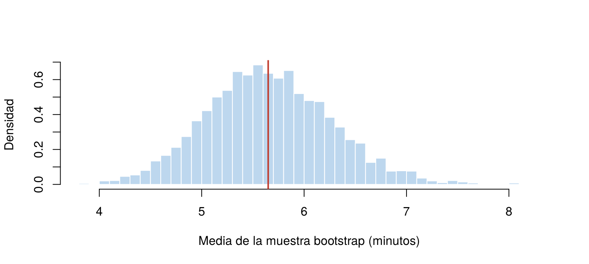

En las páginas anteriores, la distribución muestral se estudió de dos formas: con fórmulas, como \(\sigma/\sqrt{n}\) para la media, o simulando muchas muestras de una población conocida. En la práctica no se conoce la población: solo se tiene una muestra. Y para muchos estimadores, como la mediana, no hay una fórmula sencilla para su error estándar.
El bootstrap, propuesto por Bradley Efron en 1979, resuelve este problema con simulación: usa la muestra como si fuera la población y toma muchas muestras de la muestra. Esta página explica la idea, muestra cómo hacerlo en R y señala sus limitaciones. Los bloques de código se ejecutan en orden.
Si la muestra fue elegida al azar, se parece a la población. Entonces, tomar muestras de la muestra debería parecerse a tomar muestras de la población. El procedimiento es:
El reemplazo es la clave: sin él, cada muestra bootstrap sería la misma muestra original en otro orden.
En R, una muestra bootstrap se toma con
sample(x, replace = TRUE). Con una muestra pequeña de 5
datos se ve cómo funciona:
x <- c(12, 15, 9, 20, 14)
set.seed(2026)
sample(x, replace = TRUE) # una muestra bootstrap[1] 14 12 12 14 9sample(x, replace = TRUE) # otra muestra bootstrap[1] 20 20 14 20 15En la primera muestra bootstrap, el 12 y el 14 salen dos veces y el 15 y el 20 no salen.
Se retoma la muestra de 100 llamadas de Conceptos básicos. Para la media existe una fórmula: el error estándar estimado es \(s/\sqrt{n}\). El bootstrap debería dar un valor parecido.
set.seed(2026)
llamadas <- rexp(100, rate = 1/5)
mean(llamadas)[1] 5.649233sd(llamadas) / sqrt(100) # error estándar con la fórmula[1] 0.6200857set.seed(2026)
medias_boot <- replicate(5000, mean(sample(llamadas, replace = TRUE)))
sd(medias_boot) # error estándar bootstrap[1] 0.6119102Los dos métodos dan casi lo mismo: 0.620 con la fórmula y 0.612 con el bootstrap.
hist(medias_boot, breaks = 40, freq = FALSE, col = "#BDD7EE", border = "white",
main = "", xlab = "Media de la muestra bootstrap (minutos)", ylab = "Densidad")
abline(v = mean(llamadas), col = "#C0392B", lwd = 2)
Distribución bootstrap de la media de las llamadas, con 5 000 muestras bootstrap. La línea roja es la media de la muestra original.
La distribución bootstrap está centrada en la media de la muestra, 5.65, y no en la de la población, 5: el bootstrap no corrige la estimación, sino que mide cuánto variaría de una muestra a otra.
Para la mediana no hay una fórmula sencilla del error estándar, pero
el bootstrap se aplica exactamente igual: solo se cambia
mean() por median().
median(llamadas)[1] 4.040946set.seed(2026)
medianas_boot <- replicate(5000, median(sample(llamadas, replace = TRUE)))
sd(medianas_boot) # error estándar bootstrap de la mediana[1] 0.8009596La mediana de las llamadas es 4.04 minutos, con un error estándar bootstrap de 0.80 minutos. La misma idea sirve para cualquier estadístico: un percentil, una correlación, el cociente de dos medias.
| Enfoque | Qué necesita | Ejemplo |
|---|---|---|
| Fórmula | Un resultado teórico para ese estimador y, a veces, suponer un modelo como la normal | \(s/\sqrt{n}\) para la media |
| Simulación de la población | Conocer la población, lo que casi nunca ocurre | Las simulaciones de Distribución muestral |
| Bootstrap | Solo la muestra | Cualquier estimador, incluso sin fórmula |
Por eso el bootstrap es una de las herramientas más usadas de la estadística moderna. En la pestaña de intervalos de confianza se usará para construir intervalos sin suponer normalidad.
El bootstrap no hace milagros: todo lo que sabe de la población lo saca de una muestra.
| Problema | Causa | Solución |
|---|---|---|
| Todas las muestras bootstrap salen iguales a la original | Se olvidó replace = TRUE |
Remuestrear con reemplazo |
| Tomar muestras bootstrap de tamaño distinto a \(n\) | Se cambió el tamaño en sample() |
Cada muestra bootstrap tiene el mismo tamaño de la original |
| Creer que la media de la distribución bootstrap corrige la estimación | El bootstrap se centra en la muestra, no en la población | Usar el bootstrap para medir variabilidad, no para mejorar la estimación |
| El resultado cambia cada vez que se ejecuta | No se fijó la semilla | Usar set.seed() y un número de
repeticiones grande, como 5 000 |
| Usar el bootstrap con datos que no fueron elegidos al azar | El método supone que la muestra representa a la población | Revisar cómo se obtuvo la muestra |
Con la muestra llamadas, estime la proporción de
llamadas que duran más de 10 minutos y su error estándar bootstrap.
Compárelo con la fórmula \(\sqrt{\hat{p}(1 -
\hat{p})/n}\).
p_hat <- mean(llamadas > 10)
p_hat[1] 0.16sqrt(p_hat * (1 - p_hat) / 100) # fórmula[1] 0.03666061set.seed(2026)
sd(replicate(5000, mean(sample(llamadas, replace = TRUE) > 10))) # bootstrap[1] 0.03587771Los dos dan cerca de 0.036.
Estime el error estándar bootstrap de la desviación estándar de
llamadas. ¿Es grande comparado con la desviación estándar
estimada?
sd(llamadas)[1] 6.200857set.seed(2026)
sd(replicate(5000, sd(sample(llamadas, replace = TRUE))))[1] 0.7828883La desviación estándar estimada es 6.2 minutos, con un error estándar bootstrap cercano a 0.8. En poblaciones asimétricas, la desviación estándar se estima con bastante incertidumbre, aun con 100 datos.
Calcule la distribución bootstrap del máximo de llamadas
y haga una tabla de sus valores con table(). ¿Por qué no es
una buena aproximación de la distribución del máximo en la
población?
set.seed(2026)
maximos_boot <- replicate(5000, max(sample(llamadas, replace = TRUE)))
round(prop.table(table(round(maximos_boot, 2))), 3)
14.61 16.21 17.12 17.5 17.86 20.37 26.22 26.85 32.32
0.000 0.000 0.002 0.004 0.011 0.029 0.082 0.224 0.647 Solo aparecen unos pocos valores, todos tomados de los datos más grandes de la muestra, y ninguno puede superar el máximo observado, 32.32. En la población, el máximo de 100 llamadas puede ser mayor que ese valor. Es uno de los casos en que el bootstrap falla.
Última revisión: 7 de noviembre de 2026.